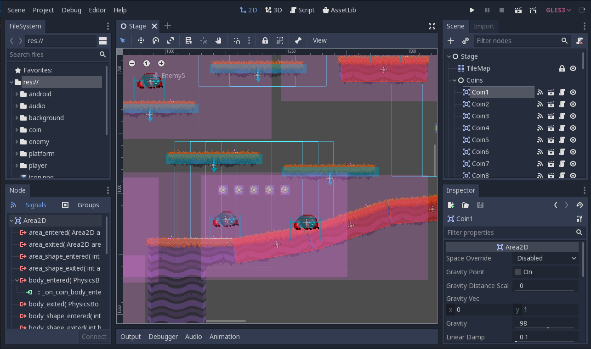
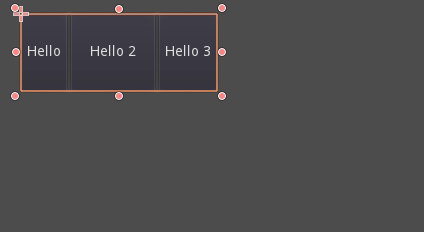
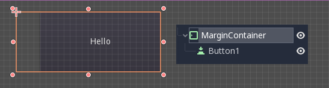
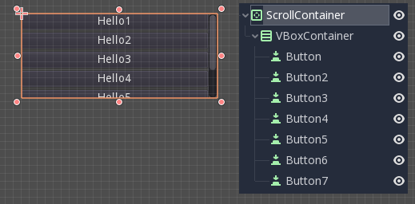
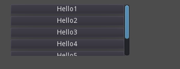
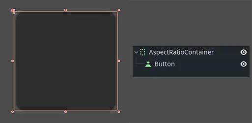
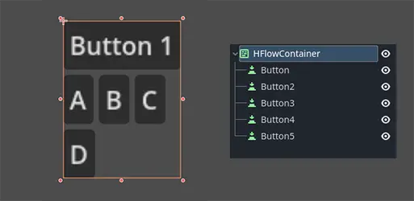
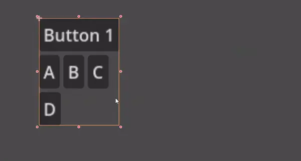
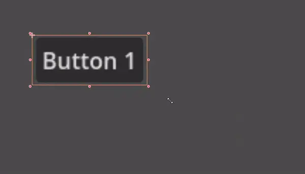

Using Containers
Anchors are an efficient way to handle different aspect ratios for basic multiple resolution handling in GUIs.
For more complex user interfaces, they can become difficult to use.
This is often the case of games, such as RPGs, online chats, tycoons or simulations. Another common case where more advanced layout features may be required is in-game tools (or simply just tools).
All these situations require a more capable OS-like user interface, with advanced layout and formatting. For that, Containers are more useful.
Container layout
Containers provide a huge amount of layout power (as an example, the Godot editor user interface is entirely done using them):

When a Container-derived node is used, all children Control nodes give up their own positioning ability. This means the Container will control their positioning and any attempt to manually alter these nodes will be either ignored or invalidated the next time their parent is resized.
Likewise, when a Container derived node is resized, all its children will be re-positioned according to it, with a behavior based on the type of container used:

Example of HBoxContainer resizing children buttons.
The real strength of containers is that they can be nested (as nodes), allowing the creation of very complex layouts that resize effortlessly.
Sizing options
When adding a node to a container, the way the container treats each child depends mainly on their container sizing options. These options can be found by inspecting the layout of any Control that is a child of a Container.

Sizing options are independent for vertical and horizontal sizing and not all containers make use of them (but most do):
Fill: Ensures the control fills the designated area within the container. No matter if a control expands or not (see below), it will only fill the designated area when this is toggled on (it is by default).
Expand: Attempts to use as much space as possible in the parent container (in each axis). Controls that don't expand will be pushed away by those that do. Between expanding controls, the amount of space they take from each other is determined by the Stretch Ratio (see below). This option is only available when the parent Container is of the right type, for example the HBoxContainer has this option for horizontal sizing.
Shrink Begin When expanding, try to remain at the left or top of the expanded area.
Shrink Center When expanding, try to remain at the center of the expanded area.
Shrink End When expanding, try to remain at the right or bottom of the expanded area.
Stretch Ratio: The ratio of how much expanded controls take up the available space in relation to each other. A control with "2", will take up twice as much available space as one with "1".
Experimenting with these flags and different containers is recommended to get a better grasp on how they work.
Container types
Godot provides several container types out of the box as they serve different purposes:
Box Containers
Arranges child controls vertically or horizontally (via HBoxContainer and VBoxContainer). In the opposite of the designated direction (as in, vertical for a horizontal container), it just expands the children.

These containers make use of the Stretch Ratio property for children with the Expand flag set.
Grid Container
Arranges child controls in a grid layout (via GridContainer, amount of columns must be specified). Uses both the vertical and horizontal expand flags.

Margin Container
Child controls are expanded towards the bounds of this control (via MarginContainer). Padding will be added on the margins depending on the theme configuration.

Again, keep in mind that the margins are a Theme value, so they need to be edited from the constants overrides section of each control:

Tab Container
Allows you to place several child controls stacked on top of each other (via TabContainer), with only the current one visible.

Changing the current one is done via tabs located at the top of the container, via clicking:

The titles are generated from the node names by default (although they can be overridden via TabContainer API).
Settings such as tab placement and StyleBox can be modified in the TabContainer theme overrides.
Split Container
Arranges child controls vertically or horizontally and creates grabbers between them (via HSplitContainer and VSplitContainer). Respects both horizontal and vertical expand flags, as well as Stretch Ratio.

The grabbers can be dragged around to change the size relation between the children:

PanelContainer
A container that draws a StyleBox, then expands children to cover its whole area (via PanelContainer, respecting the StyleBox margins). It respects both the horizontal and vertical sizing options.

This container is useful as a top-level control, or just to add custom backgrounds to sections of a layout.
FoldableContainer
A container that can be expanded/collapsed (via FoldableContainer). Child controls are hidden when it is collapsed.
ScrollContainer
Accepts a single child node. If the child node is bigger than the container, scrollbars will be added to allow panning the node around (via ScrollContainer). Both vertical and horizontal size options are respected, and the behavior can be turned on or off per axis in the properties.

Mouse wheel and touch drag (when touch is available) are also valid ways to pan the child control around.

As in the example above, one of the most common ways to use this container is together with a VBoxContainer as child.
AspectRatioContainer
A container type that arranges its child controls in a way that preserves their proportions automatically when the container is resized. (via AspectRatioContainer). It has multiple stretch modes, providing options for adjusting the child controls' sizes concerning the container: "fill," "width control height," "height control width," and "cover."

It is useful when you have a container that needs to be dynamic and responsive to different screen sizes, and you want the child elements to scale proportionally without losing their intended shapes.

FlowContainer
FlowContainer is a container that arranges its child controls either horizontally or vertically (via HFlowContainer and via VFlowContainer). When the available space runs out, it wraps the children to the next line or column, similar to how text wraps in a book.

It is useful for creating flexible layouts where the child controls adjust automatically to the available space without overlapping.

CenterContainer
CenterContainer is a container that automatically keeps all of its child controls centered within it at their minimum size. It ensures that the child controls are always aligned to the center, making it easier to create centered layouts without manual positioning (via CenterContainer).


SubViewportContainer
This is a special control that will only accept a single Viewport node as child, and it will display it as if it was an image (via SubViewportContainer).
Creating custom Containers
It is possible to create a custom container using a script. Here is an example of a container that fits children to its size:
extends Container
func _notification(what):
if what == NOTIFICATION_SORT_CHILDREN:
# Must re-sort the children
for c in get_children():
# Fit to own size
fit_child_in_rect(c, Rect2(Vector2(), size))
func set_some_setting():
# Some setting changed, ask for children re-sort.
queue_sort()
using Godot;
public partial class CustomContainer : Container
{
public override void _Notification(int what)
{
if (what == NotificationSortChildren)
{
// Must re-sort the children
foreach (Control c in GetChildren())
{
// Fit to own size
FitChildInRect(c, new Rect2(new Vector2(), Size));
}
}
}
public void SetSomeSetting()
{
// Some setting changed, ask for children re-sort.
QueueSort();
}
}